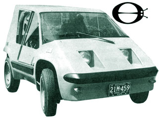
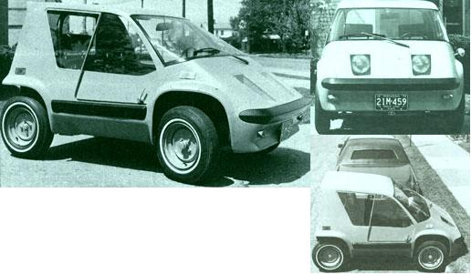
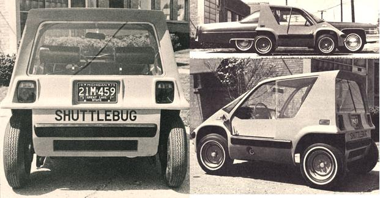

The original inspiration for THE Mother Earth News@ SHUTTLEBUG goes back at least to the very late 1940's . . . when Editor-Publisher John Shuttleworth-then a student at a small country grade school in Indiana-used to watch a King Midget automobile occasionally buzz past the playground during recess.
The King Midget, in case you've never heard of it before, was an ultra-small and ultra-light vehicle manufactured by Claud Dry and Dale Orcutt in Athens, Ohio from 1947 to 1969. The little car weighed just 690 pounds, was powered by a single cylinder, 12-brake-horsepower Kohler industrial engine, and averaged between 50 and 70 miles per gallon of regular gasoline. It was also a tough little machine that performed well on everything from rough trails north of the Arctic Circle to potholed tropical sections of the Pan-American Highway on both sides of the Equator.
That was the good part. The bad part was that the King Midget's right rear wheel-and right rear wheel only-transferred power to the road . . . which made the tiny car veer in one direction as it accelerated and in the other whenever it was slowed down. The miniature automobile also tended to float around a lot at anything over 40 miles per hour and, according to a test report in the January-February 1974 issue of Special-Interest Autos, the old KM was guilty of both understeer and oversteer-simultaneously!-as it was herded around a corner.
Be that as it may, Dry and Orcutt delivered a quality crafted product for the money (the price of the vehicle hovered around $550 during most of its manufacturing history and barely topped $1,000 at the time the car went out of production). And the two men are certainly to be commended for marketing a real alternative to bloated, costly, wasteful "regular" American automobiles for as long as they did.
It seemed only natural then-back in the fall of 1973, once the staff of THE Mother Earth News (restricted) had [1] successfully produced methane from organic waste, [2] used that methane to fuel an automobile engine, and [3] begun to think about building an ultralight vehicle specifically designed to operate on this "homemade gasoline"-for MOTHER's self-proclaimed car designers to reach into the past and dust off the old King Midget concept. Especially natural, as a matter of fact, during the winter of 1973-1974 when-as you'll recall-the Arabs suddenly called a halt to their shipments of oil to the U.S. and gas lines began to form all over the country.
"OK," we said. "We'll construct an ultra-light and ultra-small automobile designed to operate on methane. We'll steal all the good ideas we can from the ole KM, but we'll build enough weight into our little beastie and refine it aerodynamically so that it'll hold the road like it was glued to the pavement. We'll also connect the drive line to both rear wheels so we won't have any of that 'swerve one way speeding up and the other slowing down' business . . . and we'll put a big, heavy roll bar over the driver and passenger and husky 2 X 4-inch box beams around them to protect 'em from side impacts.
"And, just like the old King Midget's designers did, we'll simplify everything. Form the whole body from three or four pieces of fiberglass instead of hundreds of metal panels, bolts, washers, seals, etc. We'll forget the air conditioning, power seats, and other gizmos that Detroit hangs on almost every car nowadays. What we'll do, by gadfreys, is build a modern day King Midget that anyone can run on fuel that they produce in their own backyard."
And so we began. And, before we knew it, we were doodling up a methane-powered mini-car and an electric bug that looked just like the first vehicle but which could run on the "juice" produced by a homemade windplant. And then the Great Gasoline Drought ended so-knowing that most people didn't really care a great deal about manufacturing their own methane or electricity unless they absolutely had to-we soon found ourselves playing around with yet a third, petrol-powered version of the mini-bug.
And that's what you see here. A prototype of a two-place, urban vehicle that weighs 860 pounds and which a computer analysis tells us will deliver 54 miles per gallon of regular gasoline at a steady 55 miles per hour. A miniature automobile that should top out at 62 miles per hour on the highway and cruise all day at the legal speed limit of 55. A little car expressly designed to whisk one or two people down to the office and back every day . . . or across town on shopping trips . . . or out to the country for a week's worth of fresh eggs and vegetables.
Our bug is small on the outside (three can be nosed in to the curb in the same space that it takes to park one full-sized Cadillac) yet relatively big on the inside (one 6'4" driver, one 6'4" passenger, one medium-large dog, and two big sacks of groceries can all coexist quite comfortably in the SHUTTLEBUG).
There are only four pieces in the vehicle's whole body (two halves, a tail section, and a floor pan). The car's engine is a 16-hp Tecumseh industrial engine and our prototype is equipped with a special torque converter clutch to which we've added a reverse gear of our own design. It's a very simple little bug.
We've driven this first hand-assembled SHUTTLEBUG, we're driving it now, and we expect to test the car you see in these photos a great deal more before we really begin to lock up the machine's design. Results, to date, are highly encouraging . . . by which we mean that the mini-auto runs right down the road with the "big ones", it's a lot of fun to drive, it feels "right" out on the highway, and we don't have any cooling or other difficult problems to solve on the tiny vehicle. At present the toughest nut we're trying to crack centers around muffling that one-lunged engine (which is mounted directly behind the seats) down to an acceptable noise Jevel without "choking off" its power output with excessive exhaust back pressure.
And that's where the whole project stands at present. Maybe, just maybe, if our step-by-step test program proceeds as scheduled and if we don't run into any large and unforeseen problems and if gasoline prices continue to go up (which they will) and if we can put together the necessary financing and if we decide that we really and truly do want to go into the automobile business . . . then maybe you'll be able to tool down the highway in your own SHUTTLEBUG sometime in the fall of 1976.
If that idea sounds appealing, and if you want to be sure you get the latest and the fastest breaking news (including up-to-the-minute test reports, photographs of the car as it progresses through its development program, announcements of manufacturing dates, dealer and distributor information, prices, performance figures, vehicle specifications, delivery schedules, etc.), here's how to do exactly that:
Drop $6.00 and your name and address in the mail and send them to Shuttlebug Engineering, P.O. Box A, East Flat Rock, North Carolina 28726. By return mail you'll receive an information packet-stuffed with photos, brochures, spec sheets, etc.-on the car . . . and a charter subscription to the official SHUTTLEBUG NEWS (which will feature much more detailed information about the vehicle than this magazine can carry).
|
 |
 |
 |